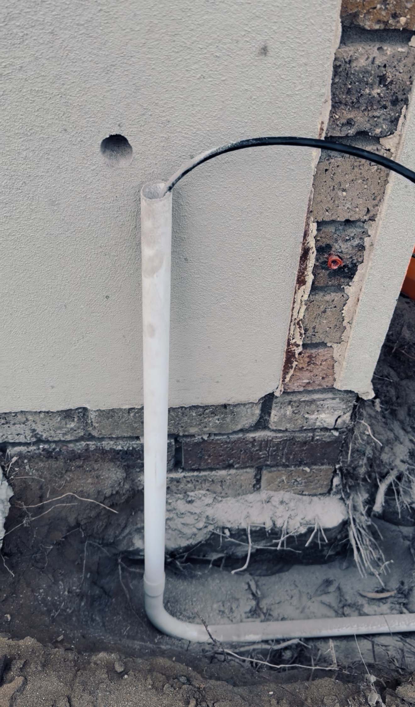
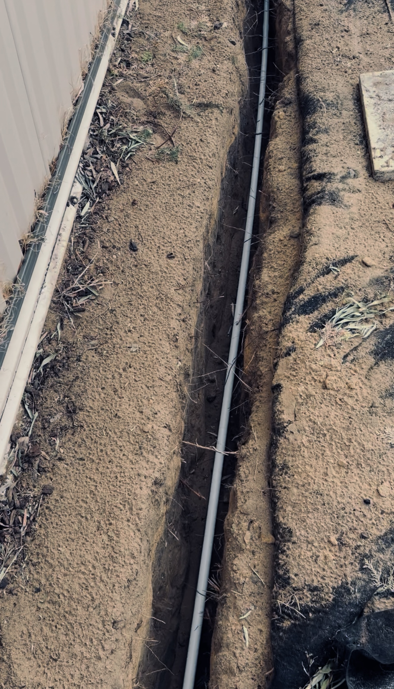

Typical completion
2-4 hrs
NBN relocation, NBN box moves and lead-in repairs • Perth north
We fix poor NBN installs in garages, cupboards and dead zones with compliant cabling, internal wall plate work, tested handover and tidy comms upgrades. Need a local page? See NBN relocation Butler, NBN relocation Joondalup or NBN relocation Yanchep.
Typical completion
2-4 hrs
Fast response
Same or next day
Jobs Completed
280+
Signal test, lead-in inspection and weak point mapping.
Move NTD/router to a central usable location.
Provide before-and-after speed and stability results.
What We Fix
Relocate your NTD/router from garages and cupboards into practical central rooms for a cleaner layout, stronger signal paths and easier day-to-day use. For full-property performance, pair relocation with our Home & Wi-Fi Upgrades service.
Repair or replace damaged fibre, coax and data lead-ins on private property where permitted, then restore protection with compliant conduit pathways. We can coordinate this with our Data Cabling & I.T. Services to future-proof the full run.
Install neat wall terminations, re-terminate weak joins and label internal points so your network is tidy, traceable and ready for future upgrades.
Diagnose sync instability, inconsistent throughput and intermittent dropouts with targeted testing from lead-in to router. We also resolve mixed-network issues involving NBN and our Starlink Installation service.
Transparent Pricing
Survey
$320
Most Popular
$720
Lead-In Works
$1,480
Recent Projects


Service areas
We regularly move NBN boxes from garages into studies, living rooms and central cupboards across Alkimos, Butler, Clarkson, Mindarie and Joondalup.
In Yanchep, Banksia Grove, Wanneroo and surrounding suburbs we troubleshoot unstable NBN speeds, bad wall plates, poor internal cabling and mixed network layouts.
For damaged external pathways, we repair conduit runs, improve protection and rebuild lead-ins where private property works are required and permitted.
Customer feedback
“They moved our NBN setup out of the garage, cleaned up all cabling and our Wi-Fi finally works across every bedroom.”
“Dropouts are gone and speeds are stable now. Super tidy job and everything was explained clearly before handover.”
– Joondalup homeowner (Google Review)
NBN site audits start at $320 and standard NTD relocation jobs start at $720, depending on cable path complexity, wall access and conduit requirements.
Yes. We relocate NTD and router setups to practical indoor locations where compliant routes are available, then test Wi-Fi and throughput before handover.
Yes. We troubleshoot lead-ins, internal cabling, wall plates and network layout issues to reduce dropouts and improve speed consistency across the home.
{kind=link}
{kind=link}
{kind=link}